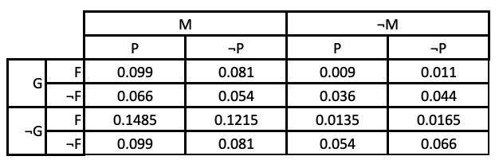

Conditional Independence#
Let us now work through an examples of conditional independence with another examples and some accompanying calculations.
Before doing so, it is useful to check out a couple of properties of the factorisation of joint distributions. Consider the following joint distrubution of two variables:
\(Y=0\) |
\(Y=1\) |
|
|---|---|---|
\(X=0\) |
0.4 |
0.3 |
\(X=1\) |
0.2 |
0.1 |
We can calculate the univariate distributions \(P(X)\) and \(P(Y)\) from this using \(P(X) = \sum_Y P(X,Y)\) and similarly for \(P(Y)\):
Let us now assume that all we have is \(P(X)\) and \(P(Y)\) and we want the joint distribution. By assuming that \(X\) and \(Y\) are independent we can calculate \(P(X,Y)=P(X)P(Y)\):
\(Y=0\) |
\(Y=1\) |
|
|---|---|---|
\(X=0\) |
0.42 |
0.28 |
\(X=1\) |
0.18 |
0.12 |
This is close to the true joint distribution, but not the same. We will now perform a similar analysis on a somewhat more complex problem to illustrate the notion of statistical independence.
A survey was done of school-leavers’ employment ten years after they finished high school. The survey look at their careers (which sector they worked in and what type of work they did) and the subjects in which they graduated from high school. We will consider a small part of this survey data and will look at the subset of people who
Studied Mathematics and/or Geography (or neither)
Pursued careers in Programming and/or Finance (or neither)
In other words, the full joint distribution has been marginalised over all variables except
\(M\): studied Mathematics.
\(G\): studied Geography.
\(F\): works in finance.
\(P\): works as a programmer.
The joint distribution of these variables is shown below:

What can we deduce from this?
It seems that both Programmers and people who work in Finance are much more likely to have studied Maths than not.
Studying Geography does not seem to make much impact on whether someone works in Finance or as a Programmer.
Amongst people who studied Maths, working as a Programmer outside of Finance is just as likely as working as a Programmer in Finance.
Let’s try to calculate some relevant quantities. We’ll first populate the joint distribution which we’ll put in a 4d numpy array.
JointPDF[iG][iM][iF][iP]
where {iG,iM,iF,iP} = {0,1} with 0 representing False and 1 representing True. Thus JointPDF[1][0][0][1] represents \(P(G\land\lnot M \land \lnot F \land P)\).
import numpy as np
JointPDF = np.zeros([2,2,2,2])
JointPDF[0][0][:][:] = np.array([[.066,0.054],[0.0165,0.0135]])
JointPDF[0][1][:][:] = np.array([[.081,.099],[.1215,.1485]])
JointPDF[1][0][:][:] = np.array([[.044,.036],[.011,.009]])
JointPDF[1][1][:][:] = np.array([[.054,.066],[.081,.099]])
We can calculate quantities from this by summing over the array in different ways. For example, to calculate the univariate distributions we sum over the other indices:
# Placeholder
Let us first explore whether the four variables are independent of each other. To test this, we see if elements of the joint distribution are given by the products of the univariate distributions: \(P(G,M,F,P)=P(G)P(M)P(F),P(P)\).
# Placeholder
This is clearly not the same as the known joint PDF. Our variables are clearly not independent of each other.
Let’s dig a little deeper and compute a few more things. This time, we’ll focus on computing some conditional distributions. We’ll focus on computing distributions that are conditional on what people studied - that seems more intuitively interesting.
First, let’s compute the distributions of \(M\), \(F\), and \(P\) conditioned on \(G\)
# Placeholder
Interesting. Each of the other variables are independent of \(G\). Perhaps we might have expected this? Would we expect whether someone has studied Geography or not to influence whether they also studies Maths, or work in finance, or work as a programmer. What about studying Maths? We might expect that this would influence whether someone works as a programmer or in finance?
# Placeholder
Indeed it does. We see that those who studied Maths are much more likely to work in finance than those who didn’t, and a bit more likely to work in programming. \(P\) and \(F\) are thus independent of \(G\) and are conditionally dependent on \(M\).
We might also look at their joint distribution:
# Placeholder
What can we see here? Nothing, at first. But let’s look more closely. We see that \(P(F\land P\vert M) = 0.44 = 0.8\times 0.55 = P(F\vert M)P(P\vert M)\). The same is true of the other terms in the Joint PDF.
We therefore have that \(P(F,P\vert M) = P(F\vert M)P(P\vert M)\), \(F\) and \(P\) are said to be *conditionally independent of each other.
So what do we now know?
\(G\) is independent of the other variables.
\(P\) and \(F\) depend on \(M\)
\(P\) and \(F\) are independent of each other, given \(M\).
We have two questions: does this make intuitive sense, and what does it mean mathematically?
Certainly it makes intuitive sense. We would probably not expect study of German to be predictive of future careers in finance or programming, nor would we expect it to be related to the study of Maths (we would probably have seen a different set of results if we had considered Physics instead of German). It also seems reasonable that careers in programming or finance would depend on a previous study of mathematics since we know that mathematical skills are important in both of these areas. What about our finding that careers in finance and programming are independent of each other given previous study of mathematics? Yes, this seems reasonable too. Many programmers work in finance, but many also work in other industries. We conclude, therefore that these findings make sense as they seem to capture the natural relationships between the different factors.
What about the mathematical implications? Let us recall the product rule of probability
\(P(X_i,X_j) = P(X_i\vert X_j)P(X_j)\)
For larger numbers of variables, this generalises to
\(P(X_1,X_2,\dots X_N) = P(X_N\vert X_1,\dots,X_{N-1})P(\vert X_1,\dots,X_{N-1})\)
We can further write \(P(\vert X_1,\dots,X_{N-1}) = P(X_{N-1}\vert X_1,\dots,X_{N-2})P(\vert X_{N-1},\dots,X_{N-2})\). This can be repeated until we end up with
\(P(X_1,X_2,\dots X_N) = P(X_N\vert X_1,\dots,X_{N-1})P(X_{N-1}\vert X_1,\dots,X_{N-2})P(\vert X_{N-1},\dots,X_{N-2})\cdots P(X_3\vert X_2,X_1)P(X_2\vert X_1)P(X_1)\)
This means that we can write any joint distribution as a product of conditional distributions.
For our current problem, we can identify the following distributions that are meaningful:
\(P(G)\)
\(P(M)\)
\(P(F\vert M)\)
\(P(P\vert M)\)
and can therefore factorise the joint distribution as
\(P(G,M,F,P) = P(P\vert M)P(F\vert M)P(M)P(G)\)
The factorisation of the joint distribution via independence and conditional independence is central to the concept of the Bayesian Network which will be our next topic.